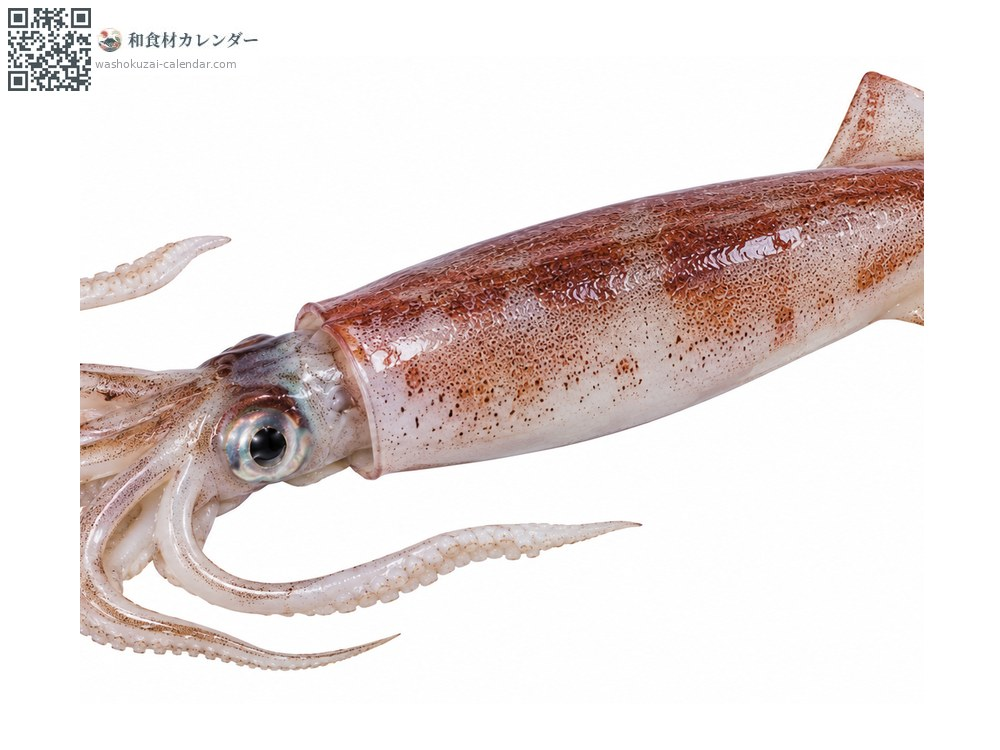
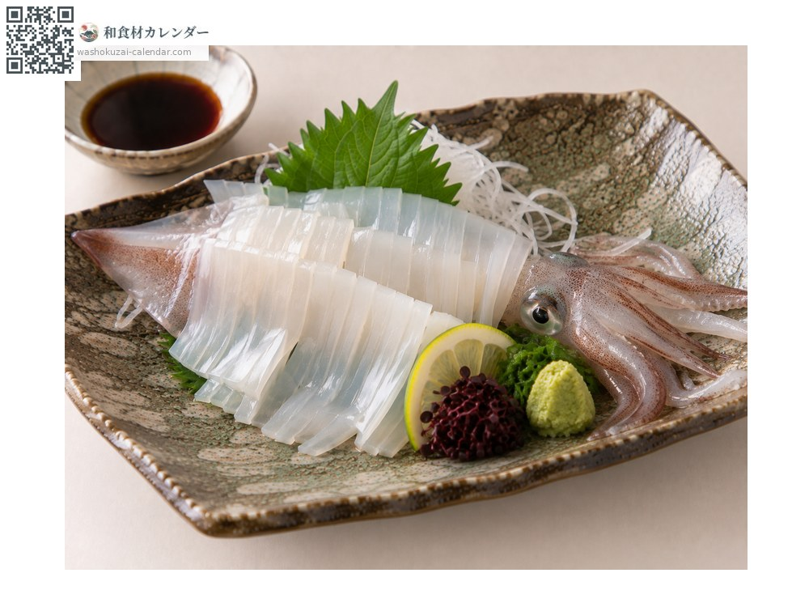
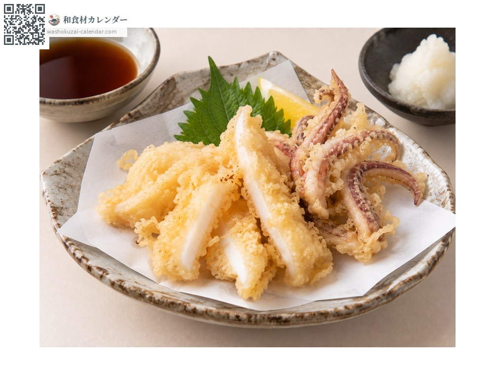
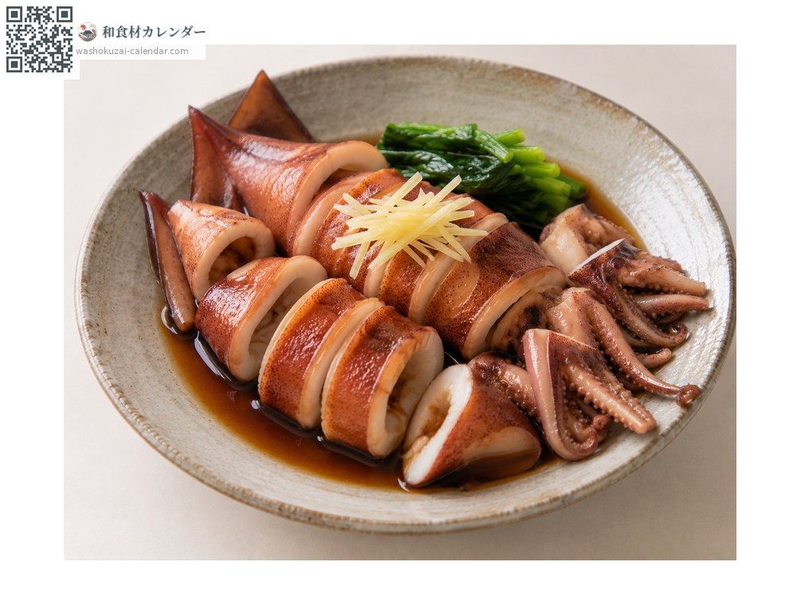
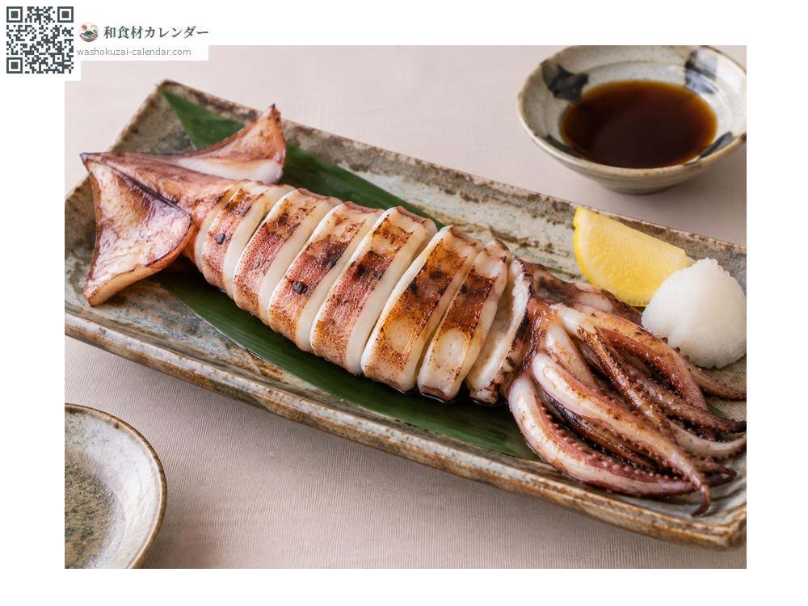

Seafood
Spear squid
ヤリイカ やりいか yariika
Also known asyariika
At its best in Jan, Feb, Mar, Dec

When it is at its best
Jan
Feb
Mar
Apr
May
Jun
Jul
Aug
Sep
Oct
Nov
Dec
In seasonAvailable
How to cook

Sashimi
Sweet and tender.

Tempura
The tender flesh suits deep-frying.

Nitsuke (simmered in sweet soy)
Simmer briefly; overcooking turns it rubbery.

Grilled
Grilled whole.
How to choose
A slim, translucent body. The flesh should not be cloudy.
Storage
Remove the innards and refrigerate. Sashimi-grade should be eaten the same day.
Main areas
Good to know
Thinner and more tender than surume-ika. The name comes from its spear-like shape.